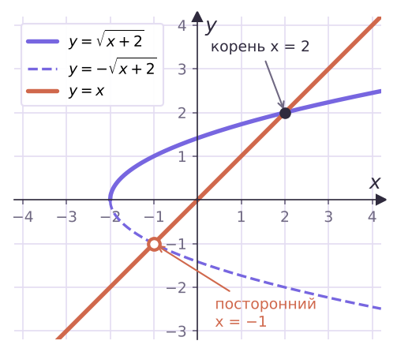
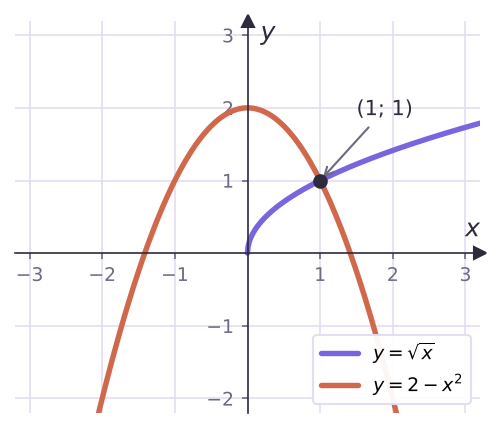

Возводим в степень и ловим посторонние корни
√(x + 1) = x − 1 · ∛(2x − 5) = 3 · ∜(x² + 9) = x + 1
А x·√3 = 6 — не иррациональное: под корнем число.
√(x − 1) = −2 — корней нет, считать не нужно.
Почему: из a² = b² следует a = b или a = −b.
x + 2 = x² ⇒ x = 2 или x = −1
x = −1 лежит на ветви y = −√(x + 2) — посторонний.

∛(x³ − 7) = x − 1 ⇒ x² − x − 2 = 0 ⇒ x = 2, x = −1
y = t³ возрастает: из a³ = b³ следует a = b. Оба корня подходят.
Слева возрастает, справа убывает — не больше одной точки.
Корень: x = 1
